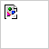

About us

We are Nimblecraft - a Bonn-based software development company with branches in Hamburg and Białystok,
Poland.
Software development is our passion. We trust in Java, OpenSource and, last but not least, in our
experienced team. All of this we deploy to bring our clients software that is key to their business, or
to professionally consult them in issues regarding architecture, tools or approaches.
Services
Product Development
You need a mobile or a web-based application that is not available as a standard solution? We
support you throughout the entire process from brainstorming to the finished product. We develop the
software agile with fast feedback cycles. We are the specialists for technology and support
decisions constructively with critical questions and brilliant solution ideas. Lean Startup or
Scrum? Both! When an MVP becomes a successful product, we can scale. We deliver a high-quality,
ready-to-use product in the cloud and are available for maintenance and continuous further
development.

Digitilization
You want to become more efficient and modern, exploit new potentials by integrating existing
services, using artificial intelligence and complex automation? We support you by analyzing business
models, data and requirements and questioning them logically and technically. We are constructive
and provide excellent solutions. After the analysis we develop services or complete systems. We
drive the process to the finished solution and do not leave our customers alone during maintenance.
We develop agile and work at a fixed price.

Consulting
You need external resources, want to apply changes or need the adivice of experts? We take over
development work or advise you in questions of architecture and methodology. Our experienced
employees always bring along an agile mindset, work practically and create value: On site (only
Hamburg or Bonn) with highly qualified specialists in software development or the analysis of
business processes and data. This makes your processes more agile, faster and of higher
quality.
Maintenance
Are you looking for a reliable partner to maintain your systems? Of course we take over the
maintenance of the solutions, which we have built, as well as of existing Java systems. For
software, that we have developed, we can carry out small and large changes at a reasonable price -
thanks to the agile procedure and automated tests. This allows you to continue using the software
for a longer time while meeting also security and legal requirements.
Our Systems
- are available 24/7
- have been implemented Europe-wide by large enterprises
- process many millions of requests daily
- work with data from over 50 million clients
- are being continuously integrated and tested
- have thousands of users
- are being constantly developed for more than ten years
- have replaced old systems
- are mostly back-end systems, but have front-end elements

Unsere Werkzeuge
- Java
- "The standard for efficient and stable server software."
- Spring
- "Has imposed and popularised dependency injection in the Java Enterprise field. Always one step
ahead of JEE and all other competition."
- Hibernate
- "JPA is the standard, Hibernate is the implementation - the most established solution."
- Jenkins
- "The standard for open-source continuous integration."
- Git
- "More than 65 millions of GitHub repositories and 24 millions of registered developers speak for
themselves."
- SonarQube
- "The data warehouse for software development, the cherry on the cake for Jenkins."
- Gradle
- "The best Java build tool. Fastest feedback thanks to incremental and parallel builds. Essential
for continuous integration."
- Docker
- "In a container Software works on all devices equally."
- Kubernetes
- "Automatic scalability and orchestration of containers."
- aws
- "Be global within minutes."
- TypeScript
- "All benefits without the problems of Javascript."
- Cucumber
- "The BDD-tool which combines specification and test documentation."
Standorte

Unser Team
Deutschland
-  Virginia Bechtel – Graphic Designer
- Bastian Dirks – UI/UX Designer
- Hildetraut Ehrenberg – Business Analystin
- Wieland Fleischmann – Developer
- Wanke Franka – Division Assistant
- Gertraud Freiberg – Business Analystin
- Harribert Holzwarth – Business Analyst
- Bernhardt Israel – Developer
- Viviane Kipp – HR Business Partner
- Eckard Linn – Developer
- Joel Mack – Business Analyst
- Falkhard Mahn – IT Support Engineer
- Janette Meiser – Developer
- Annetrud Paulus – Developer
- Elgine Poth – UI/UX Designerin
- Wolfdieter Preis – Executive Assistant
- Ulvi Schlichtling – Business Analyst
- Bonifaz Schön – Standortleiter
- Hartmund Scholze – Developer
- Jobs Testmeyer – Managing Director
- Mathias Reitz – Business Analyst
- Dietfried Witte – Business Analyst
Polen
- Wisław Biskup – Developer
- Artur Chalupa – Developer
- Antonius Gielgud – Developer
- Donat Jankiewicz – Developer
- Lucjan Kawecki – Developer
- Walter Lasota – Developer
- Kwiatosław Pala – Developer
- Radomir Rinas – Developer
- Eugeniusz Wirkus – Developer
- Sofroniusz Zagorski – Developer